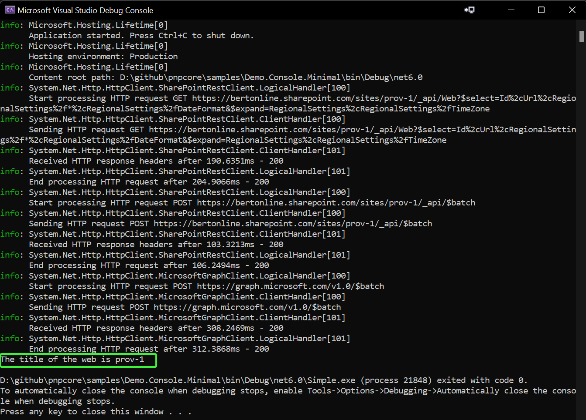

PnP Core SDK - Minimal getting started sample
This solution aims at showing you how you can use PnP Core SDK using the minimal amount of configuration and code.
Source code
You can find the sample source code here: /samples/Demo.Console.Minimal
Prerequisites
- .NET 10.0 SDK or higher installed. You can download it from https://dotnet.microsoft.com/download
Additional prerequisites for Visual Studio Code
In order to run and debug this sample in Visual Studio Code you need to install the following extensions:
Sample configuration
Step 1) Create an Azure AD application
The one thing to configure before you can use this sample is an Azure AD application:
- Navigate to https://entra.microsoft.com/
- Click on Entra ID, followed by navigating to App registrations
- Add a new application via the New registration link
- Give your application a name, e.g. PnPCoreSDKConsoleDemo and add http://localhost as redirect URI. Clicking on Register will create the application and open it
- Take note of the Application (client) ID value, you'll need it in the next step
- Click on API permissions and add these delegated permissions
- Microsoft Graph -> Sites.Manage.All
- SharePoint -> AllSites.Manage
- Consent the application permissions by clicking on Grant admin consent
Step 2) Configure the application
Open Program.cs and update the value assigned to the clientId, tenantId, and siteUrl variables to the created Entra Id client id, tenant id, and valid site URL for your tenant.
Step 3) Run the sample
Visual Studio Code and Visual Studio
Press F5 to launch the sample. A new browser window/tab will open asking you to authenticate with your Microsoft 365 account. Once you've done that the application will get the title of the site and display it.
Terminal
First you will need to build the project by running dotnet build in the project folder. Once the build is successful you can run the sample by executing dotnet run in the same folder. A new browser window/tab will open asking you to authenticate with your Microsoft 365 account. Once you've done that the application will get the title of the site and display it.
Example output
